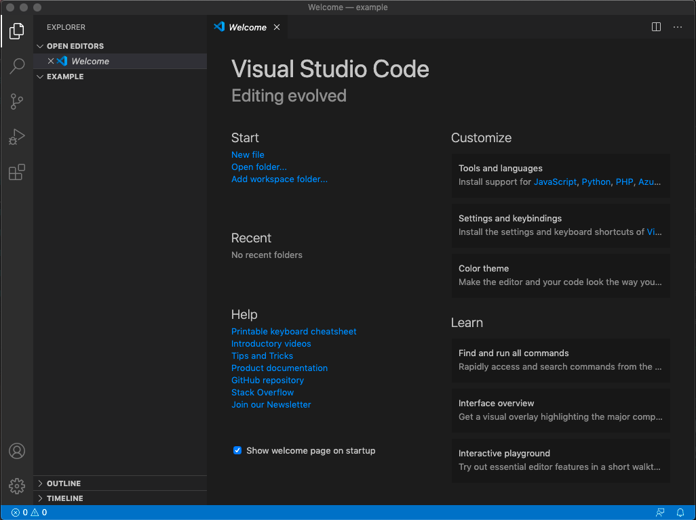
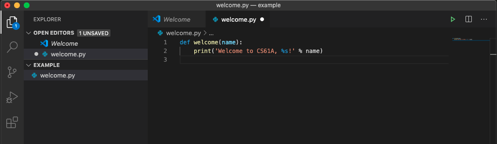
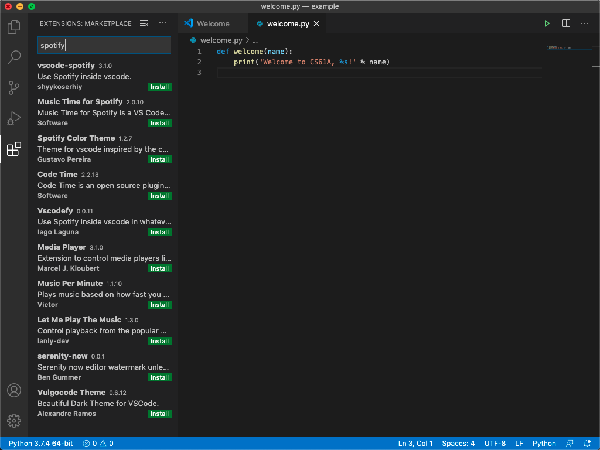

Visual Studio Code
简介
Visual Studio Code (VS Code) 是 Microsoft 开发的开源文本编辑器，可免费使用。它以相对轻量级而闻名，同时也包含了现代 IDE 中的关键功能，如 Git 集成和广泛的调试器。这使得 VS Code 非常适合从简单的 Python 脚本编写到更复杂的软件工程项目。
在你的计算机上安装 VS Code
访问 VS Code 的网站 并按照说明在你的计算机上安装它。
示例：welcome.py
到目前为止，你应该已经安装了 VS Code。你可以选择查找应用程序或从终端打开它。回想一下 实验0 中，你可以通过按 Ctrl-Alt-t 在学校计算机上打开终端。
让我们首先使用你在 实验0 中学到的 UNIX 命令创建并导航到名为 example 的目录：
mkdir ~/Desktop/example
cd ~/Desktop/example打开文件
现在让我们打开 VS Code！
对于 Mac 用户，你很可能会在
Applications中找到 VS Code。
对于 Ubuntu 用户，你很可能会通过在搜索栏中搜索 VS Code 来找到它。
对于 Windows 用户，你很可能会在
Program Files中找到 VS Code。
你也可以通过命令行在当前工作目录中打开 VS Code：
code .VS Code 将打开欢迎页面。打开资源管理器（左上角的页面图标）然后点击 EXAMPLE。要创建新文件，可以右键点击 EXAMPLE 下方并选择"新建文件"，或者点击角落有加号的页面图标。让我们将文件命名为 welcome.py。右下角将出现一个弹出窗口，提示你安装 Python 扩展。我们稍后会详细讨论扩展，但现在只需安装 Python 扩展，并忽略可能出现的任何其他弹出窗口。现在，我们可以开始编程了！

编辑文件
现在我们打开了 VS Code，我们可以开始编写我们的第一个 Python 文件。我们将编写一个在执行时打印欢迎消息的短程序。别担心，我们不指望你现在了解任何 Python！你只需要输入以下内容：
def welcome(name):
print('Welcome to CS61A, %s!' % name)输入完成后，VS Code 应该看起来像这样：

要保存，你只需按 Ctrl-s（Mac 上是 cmd-s），文件名旁边的白点应该会消失。
运行 Python
回到我们的终端，我们目前在 example 目录中。让我们玩玩我们的代码。在终端中，首先输入
python3 -i welcome.py这个命令的作用如下：
python3是启动 Python 的命令-i标志告诉 Python 以交互模式启动，这允许你从终端输入 Python 命令welcome.py是我们要运行的 Python 文件的名称
注意 Python 解释器显示 >>>。这意味着 Python 准备好接受命令了。
回想一下我们定义了一个名为 welcome 的函数。让我们看看它做什么！输入以下内容：
>>> welcome('Laryn')Python 将然后打印出
Welcome to CS 61A, Laryn!我们的代码工作了！欢迎尝试用你自己的名字。好的，现在让我们通过输入以下内容关闭 Python
>>> exit()有几种方法可以退出 Python。你可以输入
exit()或quit()。在 MacOS 和 Linux 上，你也可以输入Ctrl-d（这在 Windows 上不起作用）。
恭喜，你已经在 VS Code 中编辑了你的第一个文件！
键盘快捷键
VS Code 有许多键盘快捷键。这里有一些有用的！（对于 Mac 用户，将所有 Ctrl 序列替换为 cmd，除了集成终端序列，它仍然使用 Ctrl）
Ctrl-`：在 VS Code 中打开集成终端Ctrl-s：保存当前文件Ctrl-x：剪切光标所在的整行Ctrl-v：将你剪切的整行粘贴到光标上方的行中，或者粘贴所选文本到该位置Ctrl-z：撤消Ctrl-shift-z：重做tab：缩进一行或一组行shift-tab：取消缩进一行或一组行Ctrl-d：高亮显示当前单词。对于你在此第一个单词之后输入的每个Ctrl-d，它将高亮显示单词的每个下一个实例。这允许你使用多个光标轻松地重命名变量！（试试这个，它很有趣且非常实用！）Ctrl-tab：将你移动到下一个标签页（Mac 上也是Ctrl）Ctrl-shift-tab：将你移动到上一个标签页（Mac 上也是Ctrl）Ctrl-f：搜索单词Ctrl-shift-f：搜索所有标签页
扩展
扩展允许你自定义你的文本编辑器。它们是由像你我这样的人或公司编写的软件片段，以提高每个人的生活质量。扩展可以做任何事情，从更改配色方案，到允许你在编码时控制 Spotify，到让你与朋友实时共享工作区（❌ 但在课程作业中不行 ❌）！这里是关于扩展的文档，但欢迎通过按 Ctrl+shift+x 自行浏览。

本指南只触及了 VS Code 功能的表面。记住，如果你希望 VS Code 能做某事，它可能可以。只要 Google 一下！
结对编程
你可以使用 Live Share 扩展在 VS Code 中进行结对编程。
一旦你和你的伙伴都安装了扩展，你需要启动一个新的 Live Share 会话，然后明确地相互共享你的代码和终端。有关共享和加入会话的更多详细信息，请参阅下载页面上的说明。